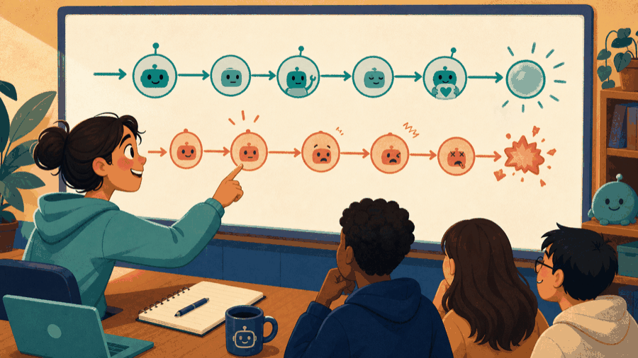

# Lecture 12: Repair programs with evidence and tests ## Turn feedback into a repair strategy **Instructor:** [Dr. Debasish Pattanayak](https://drdebmath.github.io)
## State preconditions explicitly. · Debug a safe average function Most exam bugs are contract violations: an empty range, a wrong bound, an uninitialized accumulator, or integer division. ~~~cpp #include <cassert> #include <vector> bool average(const std::vector<int>& values, double& result) { if (values.empty()) return false; long long sum = 0; for (int value : values) sum += value; result = static_cast<double>(sum) / values.size(); return true; } int main() { double result = 0.0; assert(average({1, 2}, result) && result == 1.5); assert(!average({}, result)); } ~~~ **Takeaways** - State preconditions explicitly. - Initialize every accumulator. - Test empty, one-element, and boundary cases.
## Classifying the defect narrows the repair - Compile-time: the source violates a language rule. - Link-time: a required definition is missing or duplicated. - Run-time: execution fails or reports an exception. - Logic: the program runs but produces the wrong result. Classification determines the next useful observation.
## The first compiler or test diagnostic narrows the search For a compiler message: 1. Open the first referenced source line. 2. Read the complete message, not only “error.” 3. Inspect the line immediately before it too. 4. Make one small change. 5. Recompile before changing anything else.
## Every bug looks like "the program is broken" <figure class="course-meme-figure"> <figcaption> <p class="course-meme-setup"><strong>Setup</strong> Every bug looks like "the program is broken."</p> <p class="course-meme-punchline"><strong>Punchline</strong> Name the defect class first; the right tool follows.</p> </figcaption> </figure>
## A state trace shows where behavior first diverges ~~~cpp int total = 0; for (int i = 0; i < 3; ++i) { total += values[i]; } ~~~ Record <code>i</code>, <code>values[i]</code>, and <code>total</code> after every iteration.
## Boundary cases expose empty, off-by-one, and precision defects For an average function, test: | Case | Why | |---|---| | empty input | invalid precondition | | one value | smallest valid size | | two unequal integers | reveals integer division | | <code>assert(condition)</code> | stops a debug run at the first false expectation | | maximum expected count | stresses the bound |
## Ten error messages arrive at once <figure class="course-meme-figure"> <figcaption> <p class="course-meme-setup"><strong>Setup</strong> Ten error messages arrive at once.</p> <p class="course-meme-punchline"><strong>Punchline</strong> Start with the first signal; the rest may just be echoes.</p> </figcaption> </figure>
## Game evolution: A replay becomes a reproducible test | Today's concept | Exact game part enabled | |---|---| | tracing, boundary cases, and assert | replay one move and stop at the first broken expectation | ~~~cpp #include <cassert> bool step(int& row, int& column, char move) { if (move=='d' && column<4) { ++column; return true; } return false; } int main() { int row=2, column=3; assert(step(row,column,'d')); assert(row==2 && column==4); assert(!step(row,column,'d')); } ~~~ **Debugging rule:** keep this smallest failing replay before repairing a larger game. **Next unlock · L13:** group each cell's related fields into one record.
## A safe average checks emptiness and preserves precision ~~~cpp bool average(const std::vector<int>& values, double& result) { if (values.empty()) return false; long long sum = 0; for (int value : values) sum += value; result = static_cast<double>(sum) / values.size(); return true; } ~~~
## Assessment evidence becomes a repair plan For each lost mark, write: - the concept reference; - the incorrect assumption; - one smallest counterexample; - one new practice problem; - the date you will retry it without notes. Revisit prerequisites in the dependency graph instead of memorizing one answer.
## The final answer is wrong — but where did it go wrong first? <figure class="course-meme-figure"> <p></p> <figcaption> <p class="course-meme-setup"><strong>Setup</strong> The final answer is wrong, but the first wrong turn is the real evidence.</p> <p class="course-meme-punchline"><strong>Punchline</strong> The earliest fork matters more than the loudest crash.</p> </figcaption> </figure>
## Repair by classifying, tracing, testing, and documenting - Classify before editing. - Trace changing state explicitly. - Test the smallest valid and invalid boundaries. - Repair one assumption at a time. - Assessment feedback is a map for deliberate practice.
## Verify Debug a safe average function with a claim, trace, boundary, and improvement Use the practical example as a small experiment. Before you leave, make the reasoning visible: - **Claim:** State preconditions explicitly. - **Trace:** name the state that changes and the observation that would confirm it. - **Boundary:** choose one smallest, largest, empty, or invalid input that could expose a defect. - **Improvement:** explain one change that would make the solution clearer or safer. ### Exit ticket Choose one problem to solve now and two to attempt in the lab: - Repair five off-by-one errors in supplied loop fragments. - Write tests that expose integer division in an average function. - Find and fix a null-pointer dereference in a list traversal.
## Explain Debug a safe average function without opening the code Explain today’s idea to a partner without opening the code: 1. State the input, output, and one rule the solution must preserve. 2. Point to the operation that makes progress or changes the state. 3. Name the first test you would run after changing the implementation. If the explanation needs “and then another unrelated thing,” split the design before you code.
## Solve five problems to transfer Debug a safe average function **IC151 lab practice · 5 problems** 1. Repair five off-by-one errors in supplied loop fragments. 1. Write tests that expose integer division in an average function. 1. Find and fix a null-pointer dereference in a list traversal. 1. Explain assignment-versus-comparison and design a warning example. 1. Create a ten-case test plan for binary search. Reaching this set marks the lecture as studied in this browser. [Open the IC151 lab setup and batch schedule](ic151.html).
## Find why a program compiles or runs yet violates its promised behavior. **Studio thread:** Repair the simulator from evidence | Ask | Today’s answer | |---|---| | **Problem** | Find why a program compiles or runs yet violates its promised behavior. | | **Model** | A defect is the earliest point where observed state diverges from expected state. | | **Represent** | A minimal failing input and trace table capture reproducible evidence. | | **Solve** | Classify, minimize, trace, change one assumption, and retest. | | **Verify** | Run the failing case plus the boundary and regression cases after repair. | | **Improve** | Turn every lost mark or discovered defect into a reusable test. | **Technique lens:** systematic debugging **Compare:** evidence-guided repair versus editing several guesses at once